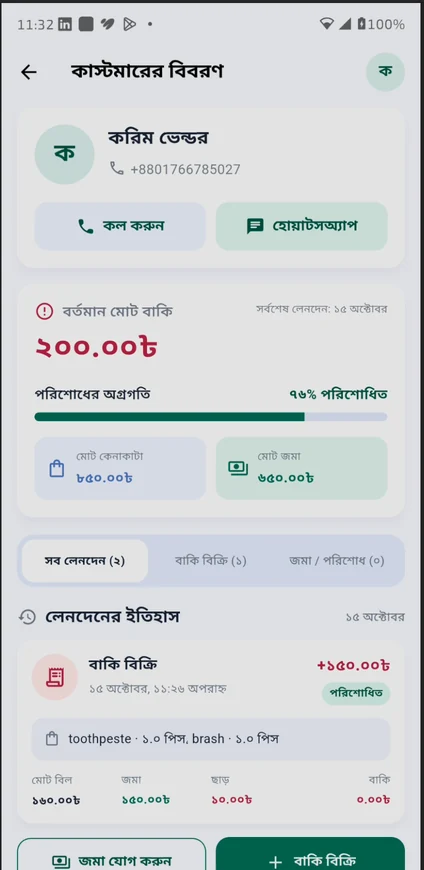
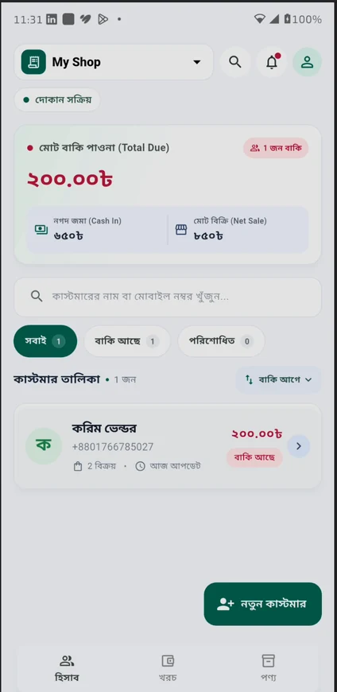

01 / কাস্টমার
কার কাছে কত বাকি,
এক নজরেই জানুন।
কাস্টমারের নাম, ফোন নম্বর, বকেয়া টাকা ও লেনদেনের ইতিহাস রাখুন। নাম বা নম্বর দিয়ে খুঁজে নিন মুহূর্তেই।
ক
করিম ভেন্ডরমোট ২টি বিক্রি
২০০.০০৳বাকি আছে
কার কাছে কত বাকি, আজ কত বিক্রি, কত টাকা জমা হলো—সব হিসাব রাখুন এক জায়গায়। জটিল সফটওয়্যার নয়, আপনার পরিচিত খাতার সহজ ডিজিটাল রূপ।


দোকান সামলানোই অনেক কাজ। হিসাব রাখতে যেন আলাদা ঝামেলা না হয়—সেই ভাবনা থেকেই বাকি খাতা। আপনার দৈনন্দিন দরকারি কাজগুলো একদম সহজভাবে সাজানো।
শুধু দরকারি ফিচার। অতিরিক্ত জটিলতা ছাড়াই ব্যবসার গুরুত্বপূর্ণ হিসাবগুলো রাখুন।
কাস্টমারের নাম, ফোন নম্বর, বকেয়া টাকা ও লেনদেনের ইতিহাস রাখুন। নাম বা নম্বর দিয়ে খুঁজে নিন মুহূর্তেই।
পণ্যের পরিমাণ, দাম, ছাড় ও জমার টাকা লিখলেই বাকি কত হলো তা সহজে দেখুন।
পরে পাওয়া টাকা সহজে যোগ করুন। আগের বিক্রি ও জমার ইতিহাসও দেখুন।
কোন খাতে কত খরচ হচ্ছে দেখুন। দৈনিক ও মাসিক খরচের সারাংশ পান।
নিয়মিত বিক্রি করা পণ্যের নাম ও মূল্য সংরক্ষণ করুন, বিক্রির সময় দ্রুত ব্যবহার করুন।
পণ্যের মূল্যতালিকা • স্টক ম্যানেজমেন্ট নয়প্রতিটি দোকানের কাস্টমার, বিক্রি, পণ্য ও খরচ আলাদাভাবে পরিচালনা করুন।
কোনো জটিল সেটআপ নয়। দোকান যোগ করে সরাসরি হিসাব রাখা শুরু করুন।
দোকানের নাম দিন। তারপর কাস্টমারের নাম ও ফোন নম্বর সংরক্ষণ করুন।
কী বিক্রি হলো, কত টাকা পেলেন আর কত বাকি—সব লিখে রাখুন।
কাস্টমারের বকেয়া, লেনদেন ও দোকানের খরচ এক নজরে দেখুন।
কল্পনা নয়—বাকি খাতা অ্যাপের আসল স্ক্রিন।
কার কাছে কত টাকা বাকি আছে, তা দ্রুত দেখুন। নাম বা ফোন নম্বর দিয়ে কাস্টমার খুঁজুন।
● Actual app screenshotবাকি খাতা বর্তমানে আপনার ডিভাইসেই তথ্য সংরক্ষণ করে। ক্লাউড সিঙ্ক বা ব্যাকআপ এখনো নেই। তাই অ্যাপ আনইনস্টল করলে বা ডিভাইস হারালে তথ্য হারানোর ঝুঁকি আছে।
না। পণ্যের নাম ও বিক্রয়মূল্য রাখা যায়, কিন্তু স্টকের পরিমাণ বা ইনভেন্টরি ট্র্যাক করা হয় না।
অ্যাপের হিসাব ডিভাইসে স্থানীয়ভাবে সংরক্ষিত হয়। কল বা WhatsApp-এ যোগাযোগের মতো বাইরের সেবার জন্য প্রয়োজন অনুযায়ী সংযোগ লাগতে পারে।
এখনো ক্লাউড সিঙ্ক বা ব্যাকআপ নেই। নতুন ফোনে আগের তথ্য স্বয়ংক্রিয়ভাবে আসবে না।
হ্যাঁ। প্রতিটি দোকানের কাস্টমার, বিক্রি, পণ্য ও খরচ আলাদা রাখা যায়।
বাকি, বিক্রি, জমা আর দোকানের খরচ—সব কিছুর জন্য একটি সহজ অ্যাপ।
Android • Flutter • বাংলা ইন্টারফেস